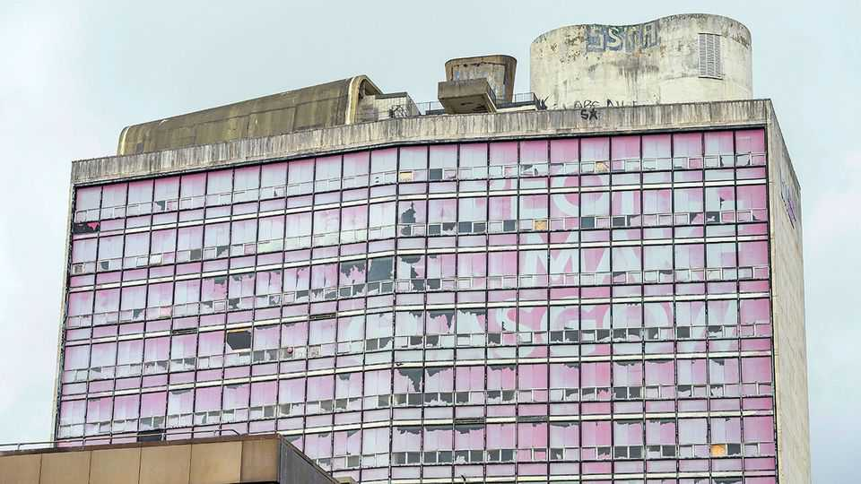

Glasgow, rescuer of the Commonwealth Games, needs saving too
The Scottish Nationalists are keen to take power from London but not to hand any to Glasgow
July 16th 2026

When the event that stands as a living legacy of Britain’s imperial past was on its knees, it was the place once known as the empire’s second city that came to the rescue. The 2026 Commonwealth Games, a sporting jamboree of the countries that once made up the empire (plus some others), found itself without a host after the Australian state of Victoria backed out because of soaring costs. Glasgow, the host city in 2014, saved the day.
But after these slimmed-down games, which open on July 23rd, Glasgow itself will need saving. It looks tired. The pink livery on a tower block welcoming people to the 2014 games has faded. Roadworks clog the streets. Blocks of flats lie half-built after investors pulled out amid rent-control fears. The international airport still lacks a rail link to the centre. In March the city lost a listed Victorian building in a blaze that started in a vape shop.
The challenges facing a post-industrial city such as Glasgow are not unique. Others are coping better. Manchester has trams and a large chunk of the BBC. The average cost of a home there has grown twice as fast as in Glasgow since 2004.
One big reason is that, since 2017, Manchester has had a mayor, who can approve big transport projects, levy small taxes and oversee ambitious developments. Glasgow does not. As mayor of Greater Manchester Andy Burnham, soon to be Britain’s prime minister, took control of the city’s buses. By contrast, Scotland’s local-transport authorities have to get approval from a panel convened by an official appointed by the transport secretary in Whitehall if they want to franchise theirs—a requirement introduced by the supposedly pro-independence Scottish National Party (SNP).
It was not always like this. From 1975 to 1996, Glasgow and its surrounding area were run by a juggernaut called the Strathclyde Regional Council. It presided over half of Scotland’s population and employed 85,000 workers. It oversaw water, transport, policing, education and roads. It modernised the Glasgow Subway—the one metro system in the world that has never been expanded beyond its original route.
But this monster of local government was seen as a threat. Britain’s Conservative government killed it in 1996 and (devolution be damned) the SNP has had no desire to bring it back to life. Strathclyde’s police and fire services were folded into Scotland-wide bodies in 2012. Its water company is now Scottish Water. “Glasgow has always been too big for Scotland,” says a (Labour) member of the Scottish Parliament.
Glasgow has ample strengths. These include several universities, museums, great architecture and a big graduate population. Run properly, it could thrive.
A mayor would not be a panacea. “Devolution on its own”, says David Phillips of the Institute for Fiscal Studies, a think-tank, “doesn’t create more money.” The Birmingham region got a mayor in 2017, and its GDP per head grew more slowly than Glasgow’s in the next five years.
But having a go-to person would surely help. Bradley Mitchell, a Glaswegian developer, says he’s banging his head against the wall trying to get permission to launch a ferry carrying passengers down the Clyde because the city council is taking so long to reach a verdict. “You can’t find out who makes the decision,” he moans. With a mayor, he says, things would be far easier.
That is unlikely to come soon. Mr Burnham supports the idea of an elected mayor, but Scotland’s SNP first minister, John Swinney, does not. The party that pioneered devolution of power in the last century is intent on holding on to it now. ■
For more expert analysis of the biggest stories in Britain, sign up to Blighty, our weekly subscriber-only newsletter.